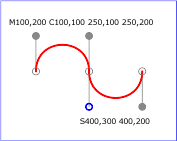
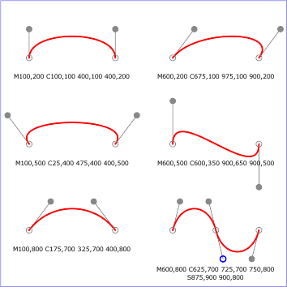

Description
Adds a line to the target object. Lines are never filled.
Arguments
- x1, y1
- The starting point of the line
- x2, y2
- The ending point of the line
Example

The shape methods listed below are defined in the RVG, RVG::ClipPath, RVG::Group, and RVG::Pattern classes. You can chain the styles method and the transform methods to the shape methods.
obj.circle(radius, cx=0, cy=0) -> circle
Adds a circle to the target object. The arc of a circle begins at the "3 o'clock" point on the radius and progresses towards the "9 o'clock" point. The starting point and direction of the arc are affected by the user space transform in the same manner as the geometry of the object.
obj.ellipse(rx, ry, cx=0, cy=0) -> ellipse
Adds an ellipse to the target object. The arc of an ellipse begins at the "3 o'clock" point on the radius and progresses towards the "9 o'clock" point. The starting point and direction of the arc are affected by the user space transform in the same manner as the geometry of the object.
obj.line(x1=0, y1=0, x2=0, y2=0) -> line
Adds a line to the target object. Lines are never filled.
obj.path(path_data) -> path
Adds a path to the target object.
A path string. The path string has the same syntax as the d= attribute on SVG's path element. See the SVG standard for a complete description of the syntax.
moveto, lineto, and closepath commands
simple uses of cubic Bézier commands within a path
cubic Bézier commands change their shape according to the position of the control points
simple uses of quadratic Bézier commands within a
path 
simple uses of arc commands within a path
Elliptical arcs: The following illustrates the four
combinations of large-arc-flag and sweep-flag and the four
different arcs that will be drawn based on the values of these
flags. 
obj.polygon(x1, y1, x2, y2...) -> polygon
obj.polygon(array) -> polygon
obj.polygon(array1, array2) ->
polygon
Adds a closed shape consisting of a series of connected line segments to the target object.
The arguments to polygon and polyline can be
x = [1, 3, 5, 7, 9]
y = [2,4]
canvas.polygon(x, y)
# is equivalent to canvas.polygon(1,2, 3,4, 5,2, 7,4, 9,2)
It is an error to specify an odd number of coordinates. Array arguments can be any objects that can be converted to arrays by the Kernel#Array method.

obj.polyline(x1, y1, x2, y2...) -> polyline
obj.polyline(array) -> polyline
obj.polyline(array1, array2) ->
polyline
Adds a set of connected lines segments to the target object. Typically a polyline defines an open shape.
See polygon

obj.rect(width, height, x=0, y=0) -> rect
Adds a rectangle to the target object.

You can define a rounded rectangle by chaining the
round method to rect:
obj.rect(width, height,
x=0, y=0).round(rx[, ry])
The round method accepts two arguments.
If the second argument is omitted it defaults to the value of the first argument.